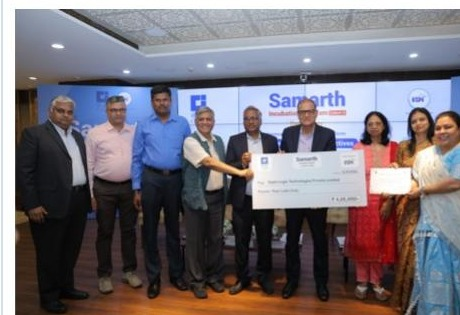

Acceleration for zero-knowledge, modular arithmetic and quantum-safe workloads.
Reference modelling, architecture, RTL, verification and FPGA implementation for compute-intensive cryptographic kernels.
Accelerate the operations that dominate computation.
Proof generation, finite-field arithmetic, transforms, multi-scalar multiplication and post-quantum operations concentrate work into structures that can benefit from dedicated hardware.
Proof-generation kernels
Multi-scalar multiplication, polynomial transforms, finite-field arithmetic and related proving workloads.
Modular compute
Reusable arithmetic structures for compute-heavy cryptographic and proof-system datapaths.
Post-quantum elements
ML-KEM / ML-DSA-class accelerator elements and hardware integration research.
Implementation evidence
Prototype selected kernels on programmable hardware to evaluate architecture and system fit.
From implemented primitives to broader accelerator research.
Current work spans FPGA-implemented zk-SNARK primitives, arithmetic and transform engines under development, and research in post-quantum hardware and secure integration.
zk-SNARK primitives
h(x) generation and Pippenger MSM primitives within the C-DOT workstream.
Arithmetic + transforms
NTT / INTT and reusable modular-arithmetic structures.
PQC-class hardware
ML-KEM / ML-DSA accelerator elements and quantum-safe key-management hardware.
Trusted processing
Hardware root-of-trust, secure processing and bus-level security concepts.
Application-specific acceleration
Feasibility, microarchitecture and RTL for specialised cryptographic workloads.
FPGA prototyping
Implementation and hardware evidence for selected accelerator paths.

Zero-knowledge acceleration progressed through competitive selection and FPGA development.
Zepto Logic was selected among the final five participants from more than one hundred applicants, received Stage-II grant support and participated in Demo Day on 12 March 2026.